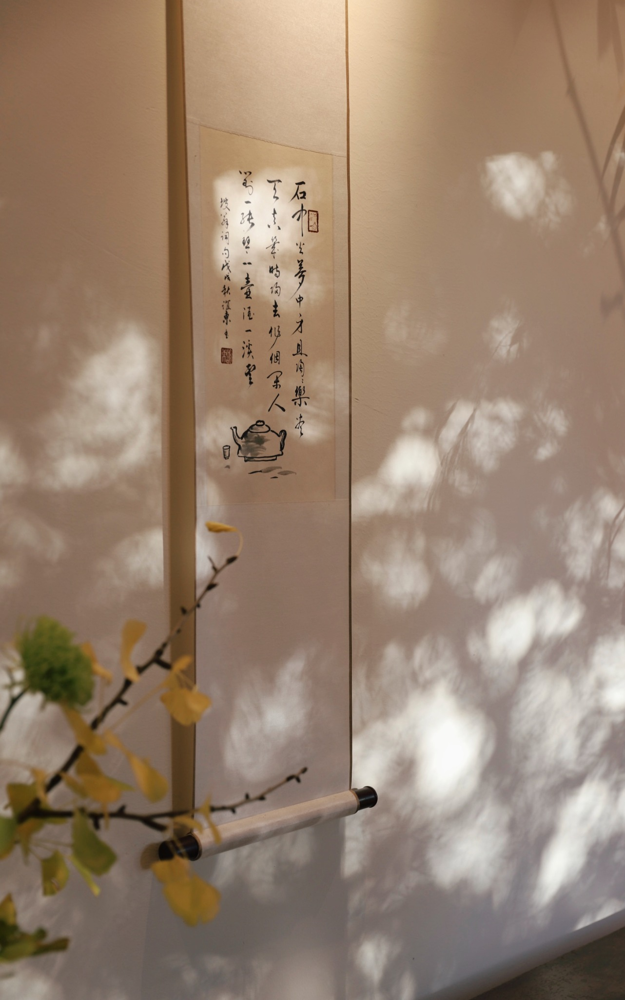
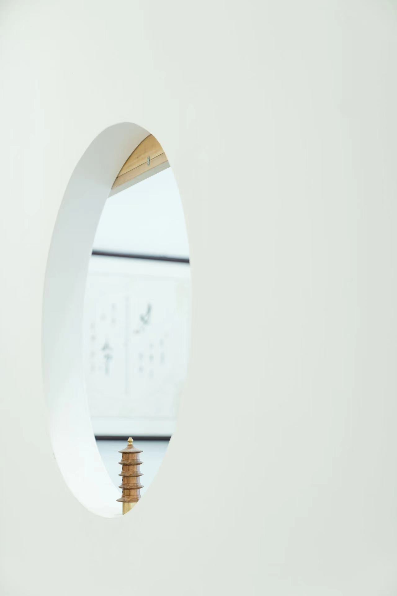
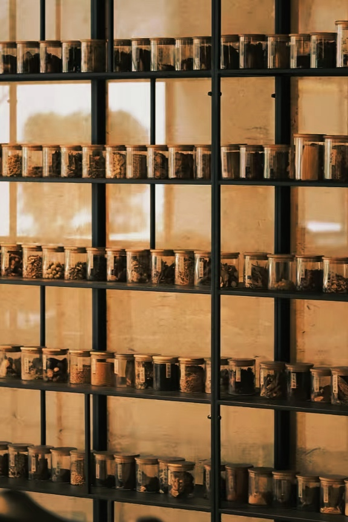
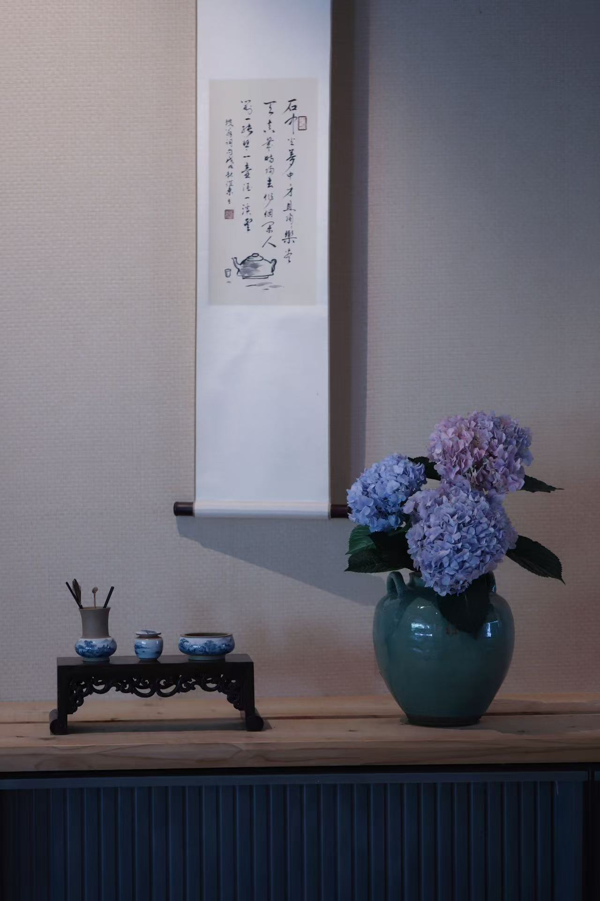
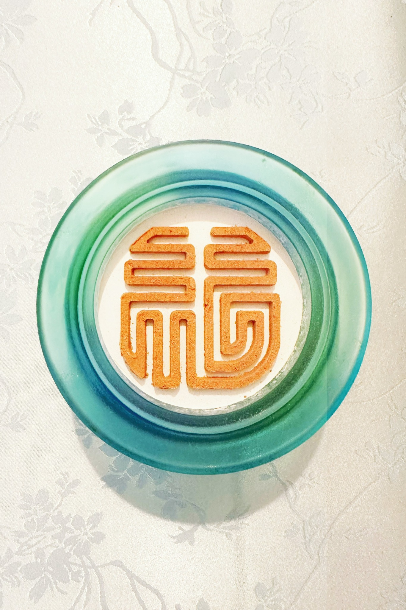
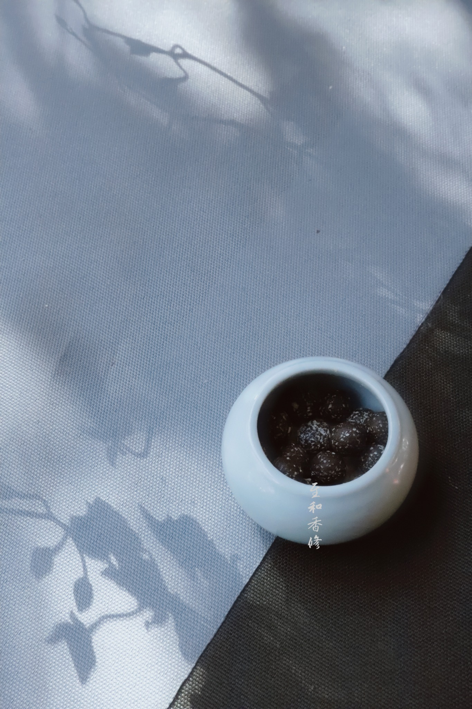

Collections
Objects and aromatics made for unhurried moments—rooted in traditional practice, natural materials and the quiet rhythm of daily life.

Tea slows the body.
Incense settles the mind.
Ritual returns us to ourselves.
Our PhilosophyExperiences
Tea gatherings, incense ceremonies and workshops are curated by inquiry rather than fixed to a public calendar.
Tea Gathering
An intimate exploration of tea, season and sensory attention.
Incense Ceremony
A guided encounter with traditional incense materials and ritual.
Seasonal Workshop
Hands-on making inspired by the rhythm of the twenty-four solar terms.
Private Experience
Small, tailored sessions for individuals and private groups.
Corporate Wellness
Quiet cultural experiences designed for teams and organizations.
Brand Collaboration
Custom gifts, co-created objects and cultural programming.
In Quiet Detail
A visual language of smoke, tea, botanical materials, vessels, light and space.





